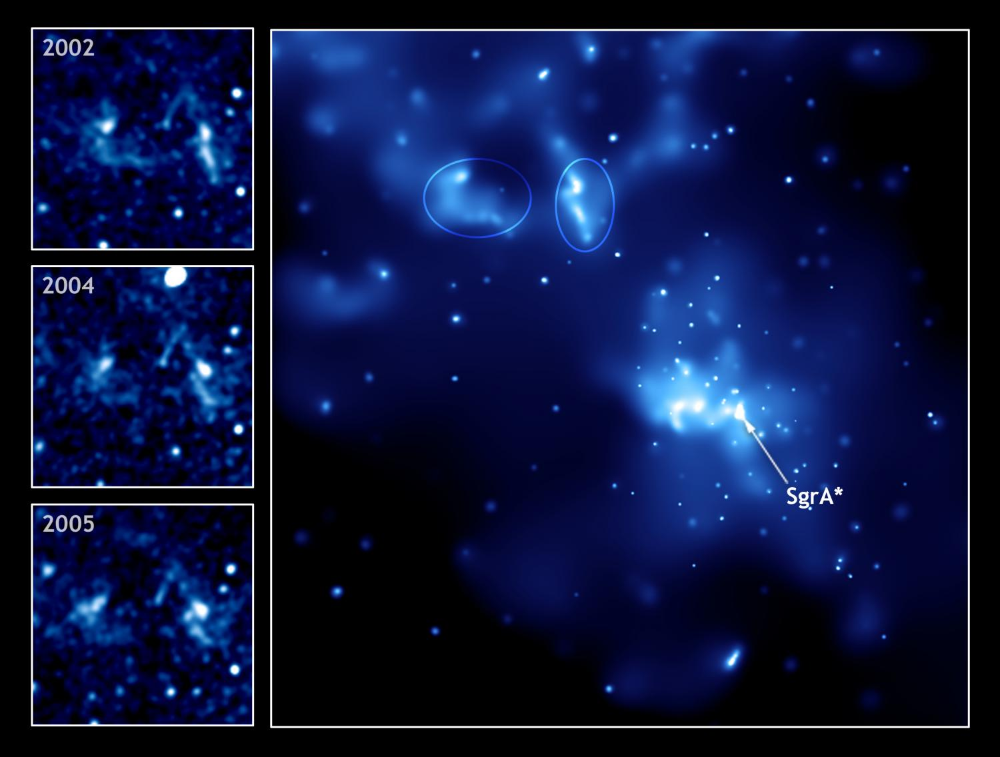

Los agujeros negros son los restos fríos de antiguas estrellas, tan densas que ninguna partícula material, ni siquiera la luz, es capaz de escapar a su poderosa fuerza gravitatoria. Mientras muchas estrellas acaban convertidas en enanas blancas o estrellas de neutrones, los agujeros negros representan la última fase en la evolución de enormes estrellas que fueron al menos de 10 a 15 veces más grandes que nuestro sol.
Cuando las estrellas gigantes alcanzan el estadio final de sus vidas estallan en cataclismos conocidos como supernovas. Tal explosión dispersa la mayor parte de la estrella al vacío espacial pero quedan una gran cantidad de restos «fríos» en los que no se produce la fusión.
En estrellas jóvenes, la fusión nuclear crea energía y una presión exterior constante que se encuentra en equilibrio con la fuerza de gravedad interior que produce la propia masa de la estrella. Sin embargo, en los restos inertes de una supernova no hay una fuerza que se resista a la gravedad, por lo que la estrella empieza a replegarse sobre sí misma. Sin una fuerza que frene la gravedad, el emergente agujero negro encoje hasta un volumen cero, en cuyo punto pasa a ser infinitamente denso. Incluso la luz de dicha estrella es incapaz de escapar a su inmensa fuerza gravitatoria, que se ve atrapada en órbita, por lo que la oscura estrella se conoce con el nombre de agujero negro.

En 2019, los astrónomos capturaron la primera imagen de un agujero negro utilizando el Telescopio de Horizonte de Eventos (EHT por sus siglas en inglés), en una colaboración internacional que conectó a ocho radiotelescopios terrestres bajo una sola antena del tamaño de la Tierra. En la imagen aparece como un círculo oscuro delimitado por un disco en órbita de materia caliente y brillante. El agujero negro supermasivo se encuentra en el corazón de una galaxia llamada M87, ubicada a unos 55 millones de años luz de distancia, y pesa más de 6 miles de millones de masas solares. Su horizonte de eventos se extiende tanto que podría abarcar buena parte de nuestro sistema solar más allá de los planetas.
Otro hito importante en el estudio de los agujeros negros se dio en 2015 cuando los científicos detectaron por primera vez las ondas gravitacionales, las mismas ondas del tejido del espacio-tiempo que un siglo antes había predicho Albert Einstein, en su teoría general de la relatividad. LIGO detectó las ondas de un evento ocurrido hace 1.300 millones de años, conocido como GW150914, en el que dos agujeros negros giraban entre sí, en espiral, mientras se fusionaban. Desde entonces y a través del estudio de las ondas gravitacionales, LIGO y otras instalaciones han observado numerosas fusiones de agujeros negros.
Estas son nuevas y emocionantes técnicas, sin embargo: los astrónomos han estudiado los agujeros negros durante décadas a través de los diversos espectros de luz que emiten. Aunque la luz no puede escapar del horizonte de eventos de un agujero negro, las enormes ondas gravitacionales en sus cercanías hacen que la materia cercana se caliente millones de grados y emita ondas de radio y rayos X. Parte de la materia que orbita aún más cerca del horizonte de eventos pueden ser expedida, formando chorros de partículas que se mueven cercanas a la velocidad de la luz emitiendo ondas de radio, rayos X y rayos gamma. Los chorros de materia de los agujeros negros supermasivos se pueden extender cientos de miles de años-luz.
En el centro de la Vía Láctea, en la dirección de la constelación de Sagitario, acecha un agujero negro supermasivo. Su nombre es Sagitario A* y su detección fue motivo del premio Nobel de física de 2020. Sagitario A* no puede observarse de manera directa, ya que no emite radiación electromagnética. Sin embargo, a su alrededor orbitan varias estrellas, de las cuales se conocen unas 50. Estas pueden observarse en la banda infrarroja del espectro electromagnético, lo que permite analizar sus órbitas y, a partir de ellas, estudiar las propiedades del agujero negro.
Según los expertos, se trata de un agujero negro más bien masivo (a secas, sin el súper), que se halla en un estado de letargo y que no dispone de la capacidad de los otros, los activos, para convertir la materia en energía. Sin embargo, se cree que muchos de los agujeros negros de los núcleos galácticos podrían incluirse en esta categoría de objetos durmientes y, además, Sagitario A* es el único que se encuentra lo suficientemente cerca como para poder estudiar en detalle su entorno, sus características y su comportamiento e, incluso, para fotografiarlo.
Se entiende que la principal causa de la debilidad de Sagitario A* reside en que no hay una nube de gas denso y abundante lo suficientemente cerca; además, se cree que la frugal dieta de SgrA* se compone del viento estelar de un grupo de estrellas jóvenes próximas, pero solo de un pequeño porcentaje de este. Una incapacidad para absorber material que parece deberse, en cierto sentido, a la alta velocidad del viento estelar, y que explicaría el hecho de que SgrA* sea mucho menos luminoso de lo que debiera teniendo en cuenta la cantidad de gas disponible en su entorno (se calcula que dispone de una milésima de masa solar por año, equivalente a más de trescientos planetas Tierra, pero que solo absorbe en torno a la millonésima parte de esa cantidad).
Otra causa de la debilidad de Sagitario A* reside en la propia forma del flujo de acreción: el material no forma un disco fino, donde el gas se calienta debido a la fricción y emite energía, sino que se configura como un disco muy grueso que cae directamente hacia el agujero negro sin dejar “testimonio” de su existencia. Y hay un tercer factor que conspira para que SgrA* brille poco, ya que se predice que debe existir un viento muy fuerte que emana de él y que provocaría la pérdida de un alto porcentaje del material del flujo antes de alcanzar la región en la que la fuerza de gravedad del agujero negro lo absorbería.
Sin embargo, sí que se han registrado eventos especialmente llamativos. En 2005, el satélite Integral (ESA) descubrió que hace trescientos cincuenta años SgrA* experimentó una etapa de actividad que debió durar una década y que aumentó su emisión casi un millón de veces, inundando de energía en rayos gamma el espacio circundante. Esa radiación prosiguió su viaje hasta, trescientos cincuenta años después, alcanzar a Sgr B2, una nube de hidrógeno que actuó como un espejo natural y comenzó a brillar en rayos gamma y rayos X, desvelando la actividad pasada de Sagitario A*. Algo similar fue detectado en 2007 por el satélite de rayos X Chandra (NASA), pero acaecido hace unos sesenta años y con menor intensidad -la emisión aumentó unas cien mil veces-.
Estos hallazgos podrían interpretarse, siguiendo una de las líneas anteriores, como picos particularmente intensos en la actividad natural de SgrA*, un escenario que, además, parece encajar bien con la variabilidad en escalas de diez a cien años ya planteada. Sin embargo, el caso desvelado por Integral genera más dudas dada su intensidad y se ha propuesto que, quizá, una nube de gas frío produjera este fenómeno. De hecho, puede que en los próximos años tenga lugar un fenómeno parecido: a principios de este año se anunciaba el hallazgo de una nube de gas -del tamaño del Sistema Solar y con una masa equivalente a tres veces la de la Tierra- en las cercanías de Sagitario A*. Con una velocidad de dos mil quinientos kilómetros por segundo, ya presenta signos de estar siendo deformada por la fuerza gravitatoria del agujero negro y se espera que en 2013 se acerque a tan solo treinta y seis horas luz de Sagitario A*. Los astrónomos creen que la nube irá desgarrándose en filamentos y cayendo hacia el agujero negro, lo que generará un nuevo periodo de actividad y aportará información de primera mano sobre su funcionamiento.